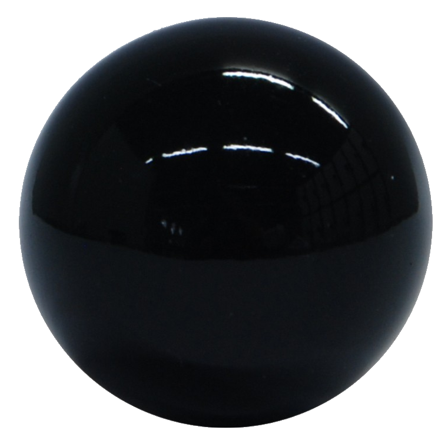

<div style="width:400px;height:300px;overflow:hidden;border:2px solid;transform-style:preserve-3d">
  <div style="perspective:400px;perspective-origin:center center;width:470px;margin-top:-850px;transform-style:preserve-3d">
    <div id=bg style="position:relative;transform:rotateX(75deg);transform-origin:center center;transform-style:preserve-3d">
      
      
      
      
    </div>
  </div>
</div>

Move with arrows / WASD / ZQSD & space
<script>

// Keys handler (see http://xem.github.io/articles/#jsgamesinputs)
u=r=d=l=s=0;
onkeydown=(e)=>k(e,1);
onkeyup=(e)=>k(e);
k=(e,v,l,i)=>{for(i in l={u:[38,90,87],r:[39,68],d:[40,83],l:[37,65,81],s:[32]})if(l[i].includes(e.keyCode))top[i]=v}

// Init
tr_x = tr_y = ang_deg = ang_rad = 0; h = -200;

// Loop
setInterval((e)=>{

  // Turn (in degrees)
  if(l) ang_deg += 3;
  if(r) ang_deg -= 3;
  
  // Convert angle in radians
  ang_rad = ang_deg * Math.PI / 180;
  
  // Go ahead / back
  if(u) tr_x += 10 * Math.sin(ang_rad), tr_y += 10 * Math.cos(ang_rad);
  if(d) tr_x -= 10 * Math.sin(ang_rad), tr_y -= 10 * Math.cos(ang_rad);
  
  // Up/down
  if(s && h > -290){
    h -= 5;
  }
  else if(!s && h < 50){
    h += 5
  }
  
  // Apply position and angle to the map
  bg.style.transform = "rotateX(75deg) rotateZ("+ang_deg+"deg) translateX("+tr_x+"px) translateY("+tr_y+"px) translateZ("+h+"px)";
  
  // Compute angle between camera (tr_x : tr_y) and ball 
  kartballangle_rad = angle = - Math.atan2(-70 - tr_y, -659 - tr_x) + Math.PI / 2;
  
  // In degrees
  kartballangle_deg = kartballangle_rad * 180 / Math.PI;
  
  console.log(~~tr_x, ~~tr_y, kartballangle_rad, ~~kartballangle_deg);
  
  ball.style.transform = "translateX(900px) translateY(900px) translateZ(130px) rotateX(-90deg) rotateY("+kartballangle_deg+"deg)";
  
  
},33)
</script>